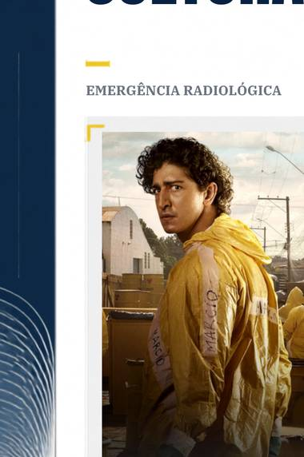

Emergência Radioativa é uma minissérie brasileira da Netflix que reconta, de forma emocionante e tensa, o acidente com Césio-137 em Goiânia, em 1987. A história mostra como uma cápsula encontrada por catadores acabou espalhando uma contaminação perigosa e causando uma enorme crise.
É uma série curta, baseada em fatos reais, que ajuda a entender uma das maiores tragédias do Brasil. Para alunos e profissionais, é uma oportunidade de refletir sobre ciência, saúde, segurança, ética, comunicação de riscos e responsabilidade profissional.